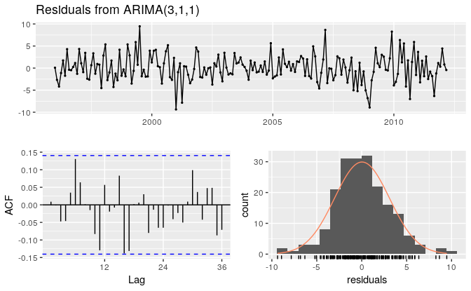
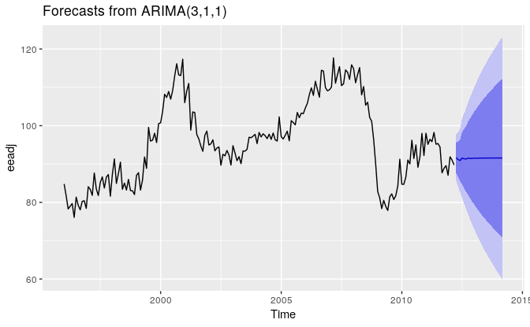
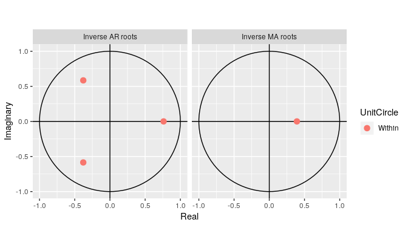

8.7 ARIMA modelling in R
How does auto.arima() work?
The auto.arima() function in R uses a variation of the Hyndman-Khandakar algorithm (Rob J Hyndman and Khandakar 2008), which combines unit root tests, minimization of the AICc and MLE to obtain an ARIMA model. The algorithm follows these steps.
Hyndman-Khandakar algorithm for automatic ARIMA modelling
- The number of differences \(0 \le d\le 2\) is determined using repeated KPSS tests.
- The values of \(p\) and \(q\) are then chosen by minimizing the AICc after differencing the data \(d\) times. Rather than considering every possible combination of \(p\) and \(q\), the algorithm uses a stepwise search to traverse the model space.
- Four initial models are fitted:
- ARIMA\((0,d,0)\),
- ARIMA\((2,d,2)\),
- ARIMA\((1,d,0)\),
- ARIMA\((0,d,1)\). A constant is included unless \(d=2\). If \(d \le 1\), an additional model
- ARIMA\((0,d,0)\) without a constant is also fitted.
- The best model (with the smallest AICc value) fitted in step (a) is set to be the “current model”.
- Variations on the current model are considered:
- vary \(p\) and/or \(q\) from the current model by \(\pm1\);
- include/exclude \(c\) from the current model. The best model considered so far (either the current model or one of these variations) becomes the new current model.
- Repeat Step 2(c) until no lower AICc can be found.
- Four initial models are fitted:
The arguments to auto.arima() provide for many variations on the algorithm. What is described here is the default behaviour.
The default procedure uses some approximations to speed up the search. These approximations can be avoided with the argument approximation=FALSE. It is possible that the minimum AICc model will not be found due to these approximations, or because of the use of a stepwise procedure. A much larger set of models will be searched if the argument stepwise=FALSE is used. See the help file for a full description of the arguments.
Choosing your own model
If you want to choose the model yourself, use the Arima() function in R. There is another function arima() in R which also fits an ARIMA model. However, it does not allow for the constant \(c\) unless \(d=0\), and it does not return everything required for other functions in the forecast package to work. Finally, it does not allow the estimated model to be applied to new data (which is useful for checking forecast accuracy). Consequently, it is recommended that Arima() be used instead.
Modelling procedure
When fitting an ARIMA model to a set of (non-seasonal) time series data, the following procedure provides a useful general approach.
- Plot the data and identify any unusual observations.
- If necessary, transform the data (using a Box-Cox transformation) to stabilize the variance.
- If the data are non-stationary, take first differences of the data until the data are stationary.
- Examine the ACF/PACF: Is an ARIMA(\(p,d,0\)) or ARIMA(\(0,d,q\)) model appropriate?
- Try your chosen model(s), and use the AICc to search for a better model.
- Check the residuals from your chosen model by plotting the ACF of the residuals, and doing a portmanteau test of the residuals. If they do not look like white noise, try a modified model.
- Once the residuals look like white noise, calculate forecasts.
The automated algorithm only takes care of steps 3–5. So even if you use it, you will still need to take care of the other steps yourself.
The process is summarised in Figure 8.11.

Figure 8.11: General process for forecasting using an ARIMA model.
Example: Seasonally adjusted electrical equipment orders
We will apply this procedure to the seasonally adjusted electrical equipment orders data shown in Figure 8.12.
Figure 8.12: Seasonally adjusted electrical equipment orders index in the Euro area.
Figure 8.13: Time plot and ACF and PACF plots for the differenced seasonally adjusted electrical equipment data.
- The time plot shows some sudden changes, particularly the big drop in 2008/2009. These changes are due to the global economic environment. Otherwise there is nothing unusual about the time plot and there appears to be no need to do any data adjustments.
- There is no evidence of changing variance, so we will not do a Box-Cox transformation.
- The data are clearly non-stationary, as the series wanders up and down for long periods. Consequently, we will take a first difference of the data. The differenced data are shown in Figure 8.13. These look stationary, and so we will not consider further differences.
- The PACF shown in Figure 8.13 is suggestive of an AR(3) model. So an initial candidate model is an ARIMA(3,1,0). There are no other obvious candidate models.
We fit an ARIMA(3,1,0) model along with variations including ARIMA(4,1,0), ARIMA(2,1,0), ARIMA(3,1,1), etc. Of these, the ARIMA(3,1,1) has a slightly smaller AICc value.
fit <- Arima(eeadj, order=c(3,1,1)) summary(fit) #> Series: eeadj #> ARIMA(3,1,1) #> #> Coefficients: #> ar1 ar2 ar3 ma1 #> 0.004 0.092 0.370 -0.392 #> s.e. 0.220 0.098 0.067 0.243 #> #> sigma^2 estimated as 9.58: log likelihood=-493 #> AIC=995 AICc=996 BIC=1012 #> #> Training set error measures: #> ME RMSE MAE MPE MAPE MASE ACF1 #> Training set 0.0329 3.05 2.36 -0.00647 2.48 0.288 0.00898The ACF plot of the residuals from the ARIMA(3,1,1) model shows that all correlations are within the threshold limits, indicating that the residuals are behaving like white noise. A portmanteau test returns a large p-value, also suggesting that the residuals are white noise.

#> #> Ljung-Box test #> #> data: Residuals from ARIMA(3,1,1) #> Q* = 24, df = 20, p-value = 0.2 #> #> Model df: 4. Total lags used: 24Forecasts from the chosen model are shown in Figure 8.14.
Figure 8.14: Forecasts for the seasonally adjusted electrical orders index.
If we had used the automated algorithm instead, we would have obtained an ARIMA(3,1,0) model using the default settings, but the ARIMA(3,1,1) model if we had set approximation=FALSE.
Understanding constants in R
A non-seasonal ARIMA model can be written as \[\begin{equation} \tag{8.4} (1-\phi_1B - \cdots - \phi_p B^p)(1-B)^d y_t = c + (1 + \theta_1 B + \cdots + \theta_q B^q)e_t, \end{equation}\] or equivalently as \[\begin{equation} \tag{8.5} (1-\phi_1B - \cdots - \phi_p B^p)(1-B)^d (y_t - \mu t^d/d!) = (1 + \theta_1 B + \cdots + \theta_q B^q)e_t, \end{equation}\] where \(c = \mu(1-\phi_1 - \cdots - \phi_p )\) and \(\mu\) is the mean of \((1-B)^d y_t\). R uses the parametrization of equation (8.5).
Thus, the inclusion of a constant in a non-stationary ARIMA model is equivalent to inducing a polynomial trend of order \(d\) in the forecast function. (If the constant is omitted, the forecast function includes a polynomial trend of order \(d-1\).) When \(d=0\), we have the special case that \(\mu\) is the mean of \(y_t\).
By default, the Arima() function sets \(c=\mu=0\) when \(d>0\) and provides an estimate of \(\mu\) when \(d=0\). It will be close to the sample mean of the time series, but usually not identical to it as the sample mean is not the maximum likelihood estimate when \(p+q>0\).
The argument include.mean only has an effect when \(d=0\) and is TRUE by default. Setting include.mean=FALSE will force \(\mu=c=0\).
The argument include.drift allows \(\mu\ne0\) when \(d=1\). For \(d>1\), no constant is allowed as a quadratic or higher order trend is particularly dangerous when forecasting. The parameter \(\mu\) is called the “drift” in the R output when \(d=1\).
There is also an argument include.constant which, if TRUE, will set include.mean=TRUE if \(d=0\) and include.drift=TRUE when \(d=1\). If include.constant=FALSE, both include.mean and include.drift will be set to FALSE. If include.constant is used, the values of include.mean=TRUE and include.drift=TRUE are ignored.
The auto.arima() function automates the inclusion of a constant. By default, for \(d=0\) or \(d=1\), a constant will be included if it improves the AICc value; for \(d>1\) the constant is always omitted. If allowdrift=FALSE is specified, then the constant is only allowed when \(d=0\).
Plotting the characteristic roots
(This is a more advanced section and can be skipped if desired.)
We can re-write equation (8.4) as \[\phi(B) (1-B)^d y_t = c + \theta(B) e_t\] where \(\phi(B)= (1-\phi_1B - \cdots - \phi_p B^p)\) is a \(p\)th order polynomial in \(B\) and \(\theta(B) = (1 + \theta_1 B + \cdots + \theta_q B^q)\) is a \(q\)th order polynomial in \(B\).
The stationarity conditions for the model are that the \(p\) complex roots of \(\phi(B)\) lie outside the unit circle, and the invertibility conditions are that the \(q\) complex roots of \(\theta(B)\) lie outside the unit circle. So we can see whether the model is close to invertibility or stationarity by a plot of the roots in relation to the complex unit circle.
It is easier to plot the inverse roots instead, as they should all lie within the unit circle. This is easily done in R. For the ARIMA(3,1,1) model fitted to the seasonally adjusted electrical equipment index, we obtain the following plot.

The three red dots in the left hand plot correspond to the roots of the polynomials \(\phi(B)\), while the red dot in the right hand plot corresponds to the root of \(\theta(B)\). They are all inside the unit circle, as we would expect because R ensures the fitted model is both stationary and invertible. Any roots close to the unit circle may be numerically unstable, and the corresponding model will not be good for forecasting.
The Arima function will never return a model with inverse roots outside the unit circle. The auto.arima function is even stricter and will not select a model with roots close to the unit circle either.
References
Hyndman, Rob J, and Yeasmin Khandakar. 2008. “Automatic Time Series Forecasting: The Forecast Package for R.” Journal of Statistical Software 27 (1): 1–22. https://www.jstatsoft.org/article/view/v027i03.